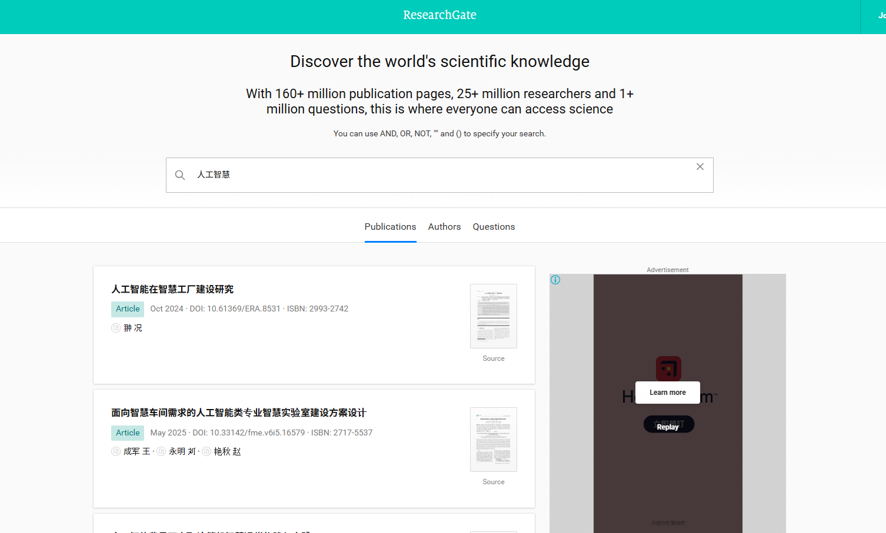
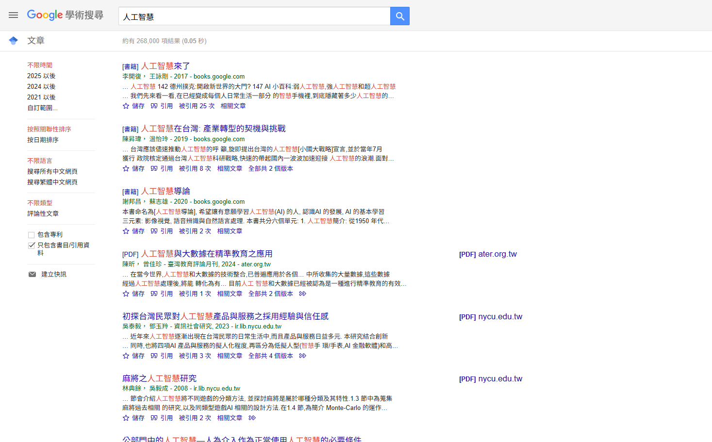
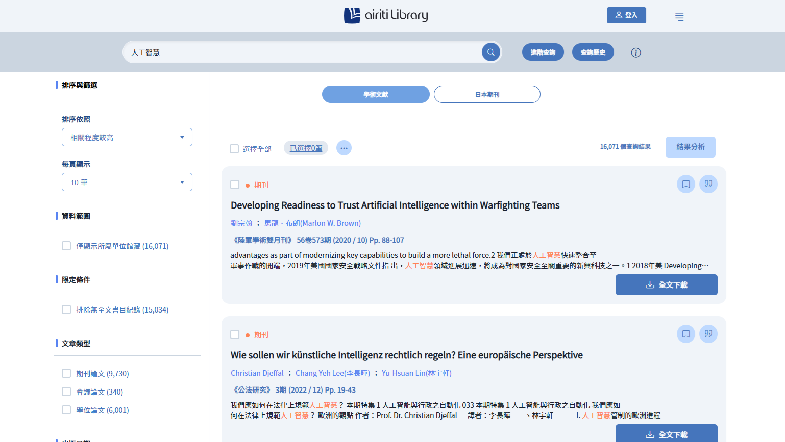
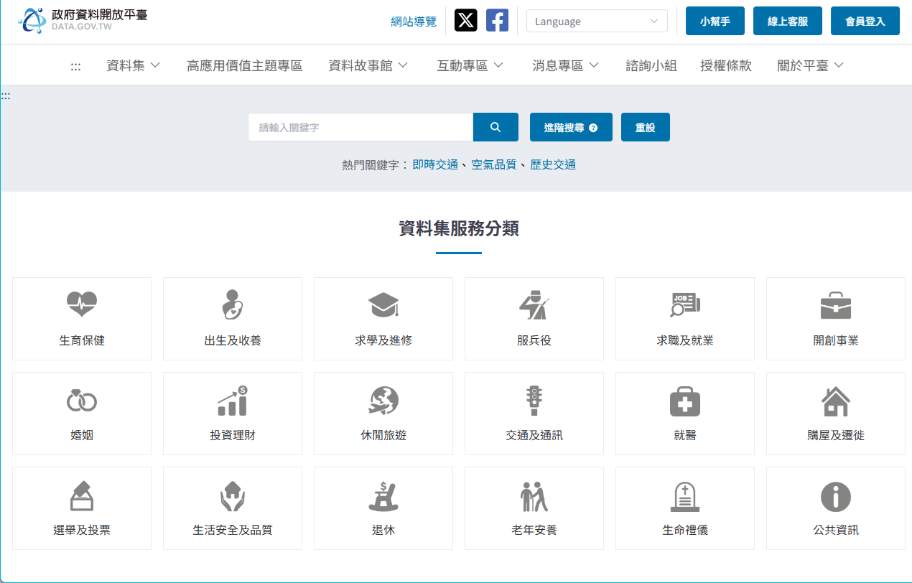
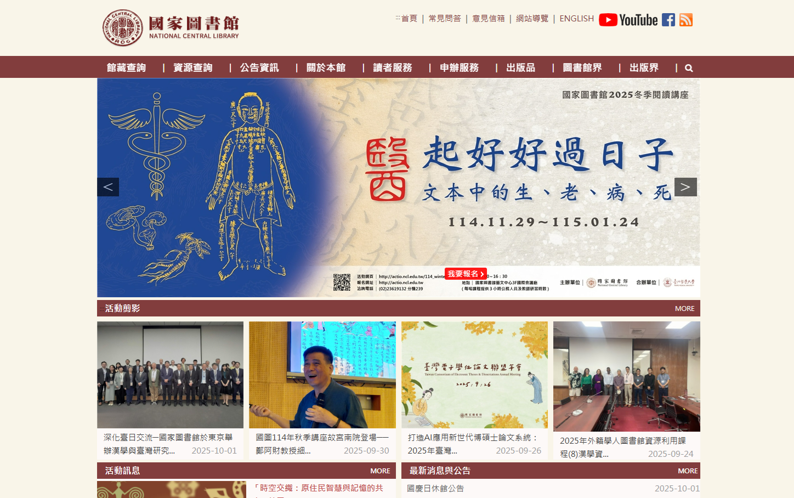
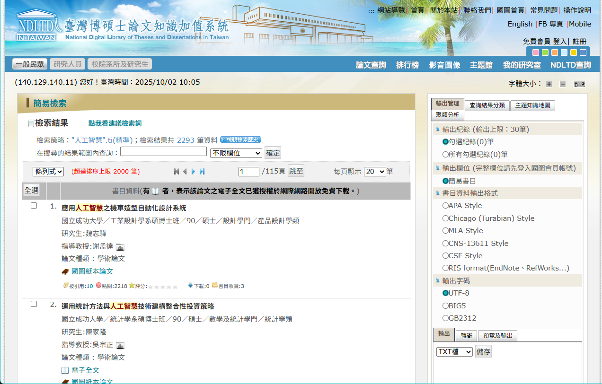

這是研究的起點，決定了整個研究的方向與範疇。一個好的研究主題應具備創新性、可行性與研究價值。
重要性
明確的研究主題能確保研究過程聚焦，避免迷失方向。它直接影響後續文獻查找的效率、研究方法的選擇，以及最終論文的深度與貢獻。
工作項目
- 從個人興趣與課程學習中發掘廣泛領域。
- 透過大量閱讀該領域的文獻，了解目前的研究趨勢與尚待解決的問題（Research Gap）。
- 將廣泛的領域逐步縮小，形成一個具體、可操作的研究問題（Research Question）。
- 與指導老師或同儕討論，評估主題的可行性與價值。
網路資源
東南科大圖書資訊處
提供圖書館館藏查詢、電子資源、資訊服務及論文比對系統。
Google Scholar (谷歌學術)
快速查找各學科的學術文獻。
華藝線上圖書館
台灣最完整的學術資源資料庫之一。
政府資料開放平臺
提供由政府單位發布的各類公開資料集。
國家圖書館
台灣的國家級圖書館，館藏豐富的學術資源。
臺灣博碩士論文知識加值系統
查詢台灣各大學的學位論文。
AI 協助提示詞 (Prompt)
- "針對「[你的興趣領域]」，提供 10 個潛在的研究主題。"
- "幫我將「[一個廣泛的主題]」這個主題，縮小為三個具體的研究問題。"
- "分析這個研究主題的創新性與可行性：「[你的研究主題]」。"
此階段是系統性地蒐集與研究主題相關的學術資料，建立對該領域的深度理解，也被稱為文獻探討（Literature Review）。
重要性
文獻探討能幫助研究者站在巨人的肩膀上，了解前人研究成果，避免重複研究。同時，它能提供理論基礎、研究方法參考，並進一步確立自己研究的獨特貢獻。
工作項目
- 根據研究主題，拆解出核心關鍵字（Keywords）。
- 利用學術資料庫進行系統性搜尋。
- 篩選與主題高度相關且具代表性的文獻。
- 精讀文獻，摘要其重點，並使用書目管理工具（如 Zotero, EndNote）進行整理。
網路資源
- 各大學圖書館資料庫入口：如 ProQuest, EBSCO, Scopus, Web of Science。
- Zotero / Mendeley：免費的書目管理軟體。
- ScienceDirect：全球領先的科學、技術和醫學全文資料庫。
AI 協助提示詞 (Prompt)
- "提供與「[你的研究主題]」相關的 10 篇關鍵學術論文。"
- "針對「[你的研究主題]」，建議一些有效的搜尋關鍵字組合 (包含中英文)。"
- "總結這篇文章的核心論點、研究方法與主要發現：[貼上論文摘要]。"
這是研究的核心執行階段。研究者需根據研究設計，收集數據或資料，並進行系統性的分析、歸納與詮釋，以回答研究問題。
重要性
此階段是產生新知識、提出新觀點的關鍵。嚴謹的研究過程與客觀的分析，是研究成果是否具有說服力與可信度的基礎。
工作項目
- 設計研究方法：決定採用質性研究（如訪談、個案分析）或量化研究（如問卷、實驗）。
- 收集資料：執行訪談、發放問卷、進行實驗或蒐集二手資料。
- 整理與分析資料：將收集到的原始資料進行編碼、統計分析或主題分析。
- 詮釋結果：將分析結果與文獻探討的內容進行對話，提出自己的觀點與發現。
網路資源
- SurveyMonkey / Google Forms：線上問卷設計與發放工具。
- SPSS / R：專業的統計分析軟體。
AI 協助提示詞 (Prompt)
- "比較這兩篇論文的觀點異同：[摘要A] 與 [摘要B]。"
- "根據以下幾點摘要，歸納出目前研究的主要趨勢與缺口：[貼上數個摘要]。"
- "我正在進行「[你的研究方法]」研究，請提供設計訪談大綱時應注意的事項。"
這是研究成果的最終呈現。將研究過程與發現，以清晰、有邏輯的學術格式撰寫成文，並確保所有引用的文獻都以正確格式標註。
重要性
論文寫作是與學術社群溝通的唯一途徑，能讓你的研究成果被看見、被檢驗。正確的引用不僅是學術倫理的表現，也是對他人研究成果的尊重，更能增加論文的可信度。
工作項目
- 擬定論文大綱：規劃緒論、文獻探討、研究方法、結果與討論、結論等章節。
- 逐章撰寫草稿，確保論述清晰、邏輯連貫。
- 使用書目管理工具插入文內引用與文末參考書目。
- 反覆修改、潤飾與校對，確保沒有文法或格式錯誤。
- 進行抄襲檢測，確保學術誠信。
網路資源
- Purdue Online Writing Lab (OWL)：提供各種論文格式（APA, MLA）的詳細寫作指南。
- Grammarly：英文文法與寫作風格檢查工具。
- Turnitin：論文原創性比對系統（通常由學校提供）。
AI 協助提示詞 (Prompt)
- "幫我為一篇關於「[你的主題]」的學術論文，草擬一份包含各章節重點的詳細大綱。"
- "將這段文字改寫得更具學術語氣：「[你的草稿文字]」。"
- "請根據 APA 第七版格式，為這筆資料產生引文：[作者、年份、文章標題、期刊名稱、卷號、頁數]。"